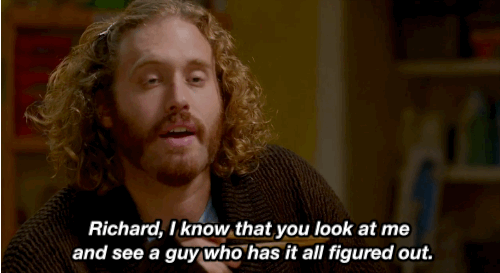
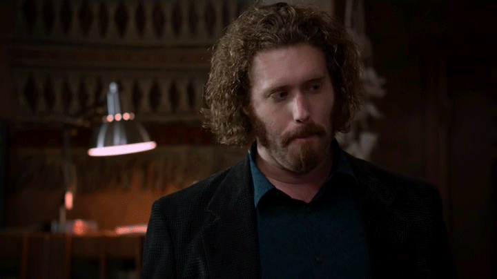
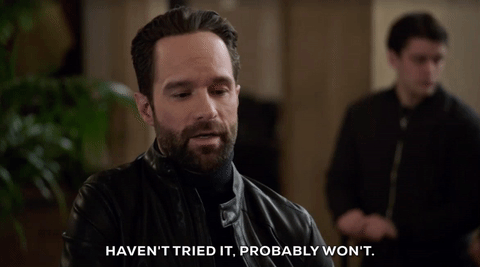
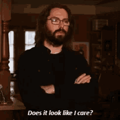
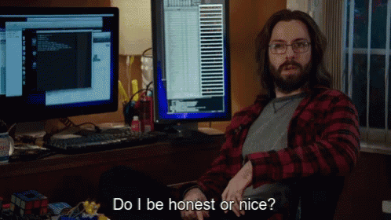
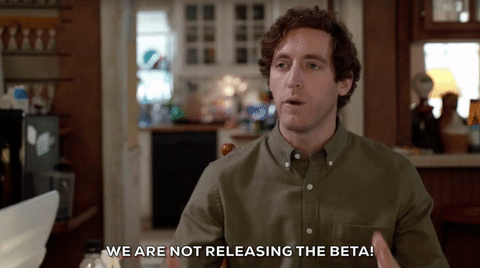
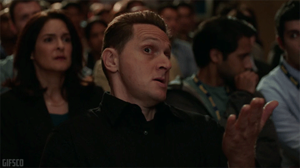
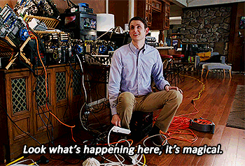
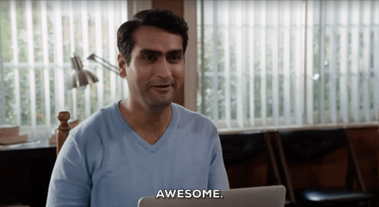
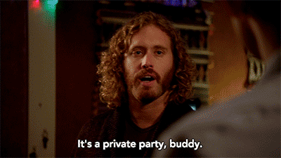

My experience on others stuff
- Flatz-CMS fork of XCMS (2007-2010)
- Firefox OS Boilerplate
- Mozilla Card Generator
- Mozilla/remo
- Mozillaitalia/vademecum
- Promote MDN for WordPress
- WP-Italia-Community/How-to
- GlotPress
- Varying Vagrant Vagrants
- ClassicPress
A lot of team management about internal/organizative stuff, from event organization, book writing, project management etc.
My experience on my projects
- GH-License
- GlotDict
- Wordpress Plugin Boilerplate Powered and his dependencies
- Many others in the past now abandoned/obsolete...
My personal projects where I receive a lot of involvements of other people also on organizative stuff
improve documentation based on your experience

be open to activities for other users

Propose and try new approaches

care of what people say

be honest with others

slowdown who push stuff

quiet moments for review

remove stuff not used anymore

Check if everything works also if others confirm

Enjoy with rest of the team

enjoy what others do with your stuff

if a project is closed you can always do your fork
